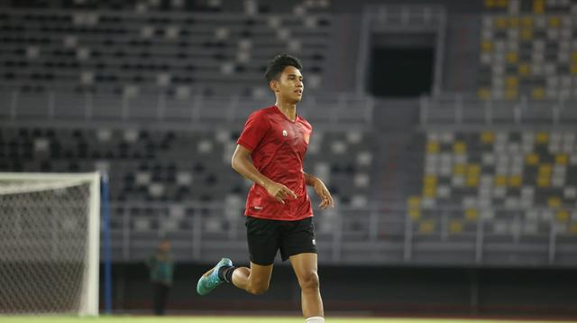

Jadi Favorit Utama di Kualifikasi Piala Asia U-20 2023, Timnas Indonesia Dilarang Anggap Remeh Vietnam dan 2 Lawan Lain
Timnas Indonesia U-20 menjadi favorit utama untuk lolos dari Grup F Kualifikasi Piala Asia U-20 2023.